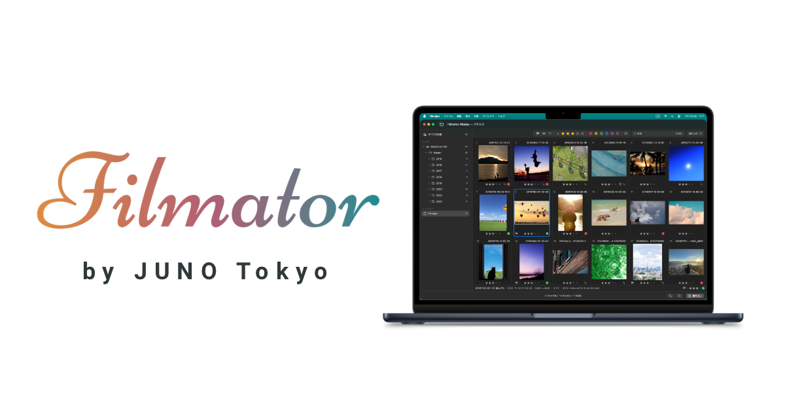

Press Release
カメラが描いた JPEG を、作品として仕上げる Mac 用写真アプリ「Filmator」をリリース
Lightroom Classic のワークフローはそのままに、「JPEG撮って出し」が可能に。
カメラが生成した JPEG を活かし、作品として仕上げて書き出す Mac 用写真アプリ「Filmator」。
Lightroom Classic の写真管理ワークフローはそのままに、「JPEG 撮って出し」の一枚を仕上げられます。

リリース概要
東京を拠点とするアプリ開発スタジオ JUNO Tokyo（代表: 岡元 淳）は、Mac 用写真アプリ「Filmator（フィルメーター）」を 2026 年 7 月 19 日（日）に Mac App Store でリリースしました。Filmator は、カメラが生成した JPEG を活かし、作品として仕上げて書き出す Mac 用写真アプリです。Lightroom Classic のカタログを読み取り専用で参照し、JPEG を対象に必要な画像調整を加えて書き出せます。写真管理のワークフローを変える必要はありません。
- 製品ページ: https://juno.tokyo/filmator/
- Mac App Store: https://apps.apple.com/jp/app/id6788626694
開発の背景
FUJIFILM のフィルムシミュレーションに代表されるように、カメラが生成する JPEG には、撮影時の光、撮影者の意図、カメラの絵作りが反映されています。これを完成形として写真を楽しむ「撮って出し」の文化は、メーカーを越えて広がっています。
写真アプリの定番である Lightroom Classic では、RAW+JPEG のペアを1枚の写真として管理すると、RAW が主画像として扱われます。カメラが生成した JPEG はファイルとして残っていても、写真は基本的に RAW から再現像されるため、JPEG をそのまま活かしたり、直接選んで書き出したりすることはできません。
カメラが描いた JPEG を活かしたい。一方で、後からの編集に備えて RAW も残しておきたい。Filmator は、その両方を叶えるために開発しました。
主な特長
- カメラが生成した JPEG を起点に：RAW+JPEG を1枚として管理する Lightroom Classic のカタログから、カメラが生成した JPEG を取り出し、Lightroom Classic で決めた構図と向きを反映。必要な画像調整を加えて仕上げられます
- いつもの Lightroom Classic 管理のまま：カタログは読み取り専用で開き、一切書き込みません。フラグ、レーティング、カラーラベルによる絞り込みも、そのまま使えます
- 必要なぶんだけ、基本補正：Lightroom Classic と同じ名称のスライダーで画像を非破壊編集。画像処理には Apple 純正の Core Image を使用しています
- 作品作りを支える書き出し：画質、サイズ、透かし、ファイル名、メタデータ範囲を設定可能。オリジナルをそのままコピーする書き出しにも対応します
- 幅広い対応ソース：RAW+JPEG ペアの JPEG、単体の JPEG／HEIF、iPhone ProRAW に埋め込まれた JPEG に対応します
- プライバシー：写真やカタログの内容を外部へ送信せず、すべての機能がオフラインで動作します
開発者コメント
「Filmator」の “Film” には、撮影時の光、撮影者の意図、カメラの絵作りが記録された JPEG を、デジタル時代のフィルムのように捉える思いを込めました。私自身が FUJIFILM ユーザーとして欲しかった、「カメラが描いた JPEG を活かして作品を仕上げる」ための道具です」（JUNO Tokyo・岡元）
価格・提供条件
| プラン | 価格 | 内容 |
|---|---|---|
| アプリ本体 | 無料 | ダウンロード自由 |
| 無料プラン | ¥0 | 累計 100 枚まで、機能制限なく書き出し可能 |
| Filmator Pro | ¥3,000 | App 内課金・買い切り。書き出し枚数の制限がなくなります |
対応環境
macOS 14 以降／日本語・英語対応
プライバシー
- 写真やカタログの内容を外部へ送信せず、すべての機能がオフラインで動作します
- Lightroom Classic のカタログは読み取り専用で開き、書き込まない
- トラッキングなし。第三者トラッキング SDK 不使用
- 匿名の利用状況・診断データ（アプリ起動 / カタログ open / 編集 / 書き出し成功枚数 / 非コンテンツのエラー状態など）を品質改善のために送信するが、写真・カタログの内容・ファイル名・パス・撮影日時・カメラ機種・ユーザーアカウント・広告 ID は一切含まない
- 詳細: https://juno.tokyo/filmator/#privacy
ダウンロード
開発者について
JUNO Tokyo は東京を拠点とするアプリ開発スタジオです。
iPhone 用書類スキャンアプリ「PopScan」に続き、Filmator は2作目のリリースとなります。
関連リンク
- Filmator 公式ページ: https://juno.tokyo/filmator/
- プレスキット（アイコン・スクリーンショット・各種テキスト一式 / Dropbox）: リンク
- Filmator 開発ノート: https://note.com/juno_tokyo
本件に関するお問い合わせ
JUNO Tokyo
| 項目 | 内容 |
|---|---|
| 代表 | 岡元 淳（おかもと じゅん） |
| 所在地 | 東京 |
| contact@juno.tokyo |